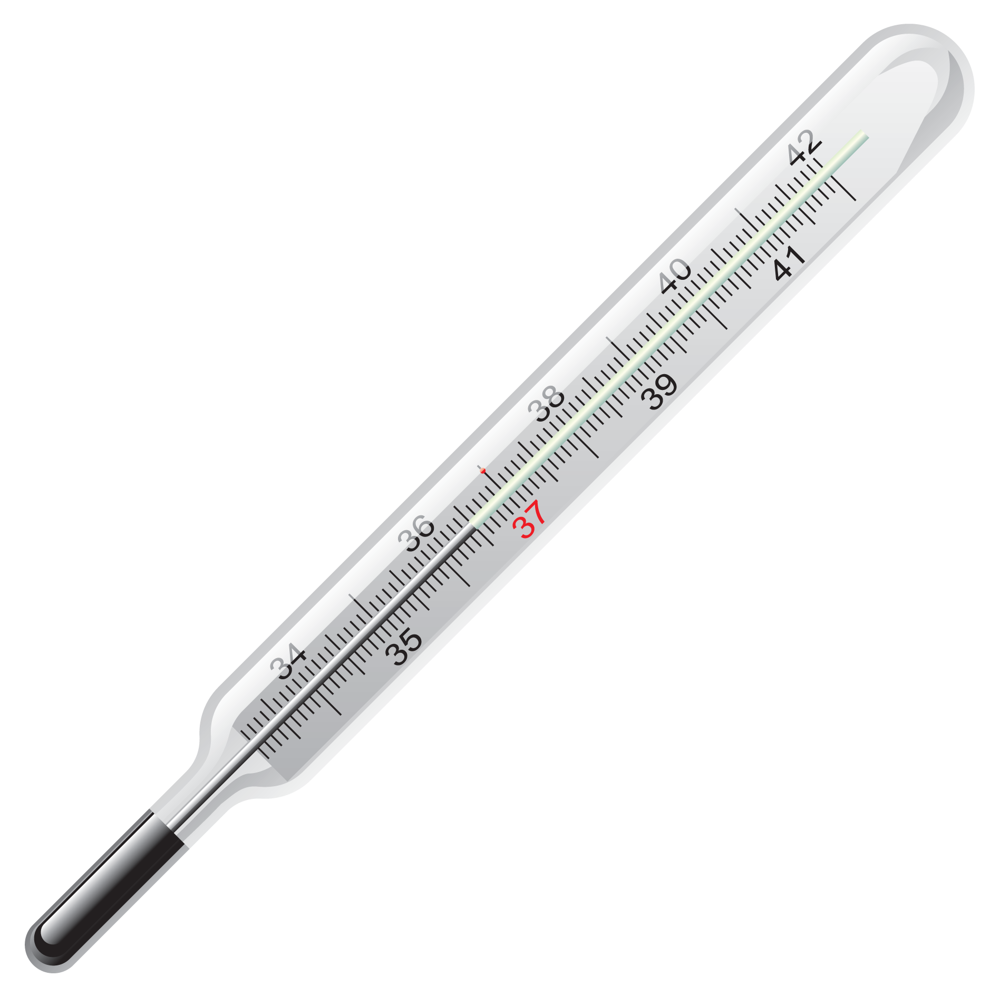

Kapitel 2 Datasæt og data
2.0.1 Uni- bi- og multivariate datasæt
Datasæt er sæt af en eller flere variable:
- Univariate datasæt fx tider ved marathonløb
- Bivariate datasæt fx tider ved marathonløb og køn
- Multivariate datasæt fx tider ved marathonløb, køn, alder, medlem af sports klub
2.0.2 Kvalitative variable
Kvalitative variable er data vi ikke kan måle eller tælle. De antager værdier i form af navne eller labels:
- Kæledyr: kat, hund, marsvin
- Køn: mand, kvinde
- Favorit app: Angry Birds, Messenger, Audible, Tinder
2.0.3 Kvantitative variable
Kvantitative variable er målbare numeriske variable, vi deler disse op i kontinuerte og diskrete variable
2.0.3.1 Diskrete variable
Diskrete variable er fx.
- Antal biler der passerer en bro observeret over flere dage.
- Dagsproduktionen af chokoladefrøer på Toms.
- Antal personer der har iphones
- Antallet af indbyggere i en by
2.0.3.2 Kontinuerte variable
Kontinuerte variable er fx.
- Antal ml. indhold i shampoo flasker
- Aktiekurser for Intel
- Vægten på værnepligtige
- Højden på studerende
2.0.4 Skalatyper
Vi kan ydermere inddele variable efter skalatype hvor lavere betyder mindst restriktiv.
- Nominalskala, bruges til at måle kvalitative data (er der kun 2 mulige udfald kaldes variablen specielt binær eller dikotom), fx.
- Køn Mand Kvinde
- Styresystem: IOS Android Windows Symbian Andet
- Race: Europæisk, Afrikansk, Asiatisk Andet
- Køn Mand Kvinde
- Ordinalskala inddeler data efter en rangordning
- Karakterer på 7 trins skalaen -3 00 02…
- Moodys credit ratings Aaa Aa A Baa Ba B Caa Ca C
- Tilfredshed meget utilfreds, noget utilfreds, nogenlunde tilfreds, meget tilfreds
- Intervalskala man kan sammenligne afstande og forskelle, men der er intet meningsfuldt nulpunkt. Nul for en intervalskala variabel betyder således ikke fravær af den målte størrelse. Nul grader celsius betyder altså ikke fravær af temperatur (det absolutte nulpunkt 0 Kelvin, hvor alle molekyler og atomer er i grundtilstanden). En IQ på 0 betyder ikke fravær af intelligens.
- Temperatur målt i Celsius 
- Temperatur målt i Fahrenheit
- PH
- IQ
- Ratioskala
- Beløb i lommen
- Højde på studerende
- Hastighed af biler ved vejkryds
- Indhold i Coca Cola flasker
“Statistics are used much like a drunk uses a lamppost: for support, not illumination.”
- Vin Scully
Interval- og ratioskalaer omtales som numeriske eller kontinuerte skalaer, disse er knyttet til kvantitative variable.
Nominal- og ordinalskalaer omtales ofte som kategorisk eller faktor, disse er knyttet til kvalitative variable.
En stikprøve af skalatype ratio kan fx. reduceres til ordinal, eller nominal. Temperatur målt i celsius kan fx. omskrives til en ordinal variabel: koldt normalt varmt, eller en nominal variabel: ekstrem temperatur eller normal temperatur.
Kategoriske skalaer kan yderligere reduceres til en dikotom skala, ved at sammenlægge kategorierne, til man kun har 2 kategorier.
Det er vanskeligere at ændre en nominal- ordinal- eller ratioskala til en intervalskala. At ændre variablen nominalskala variablen køn til ordinal giver fx. ikke mening.